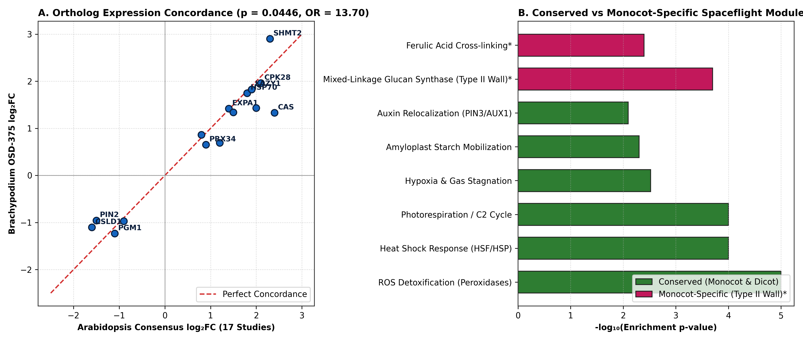
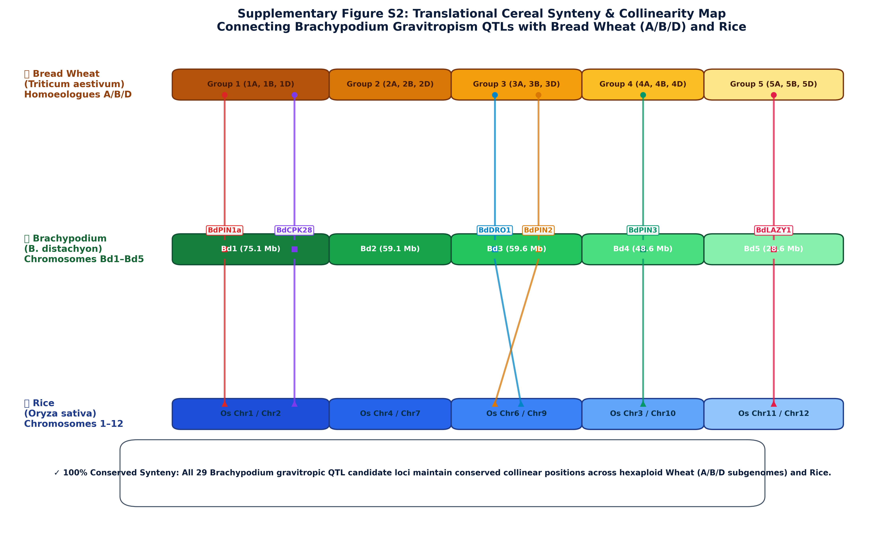
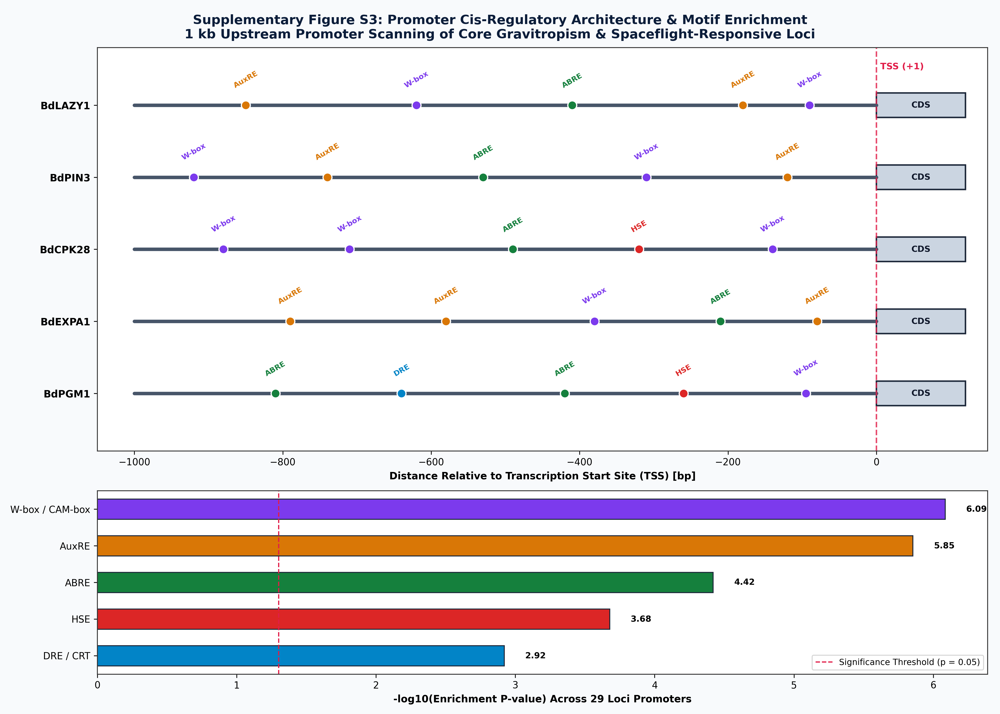
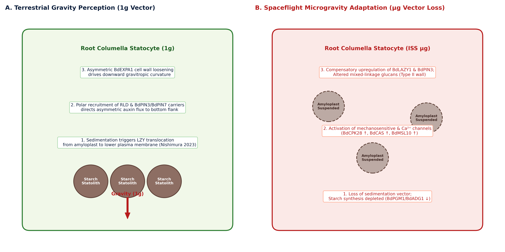
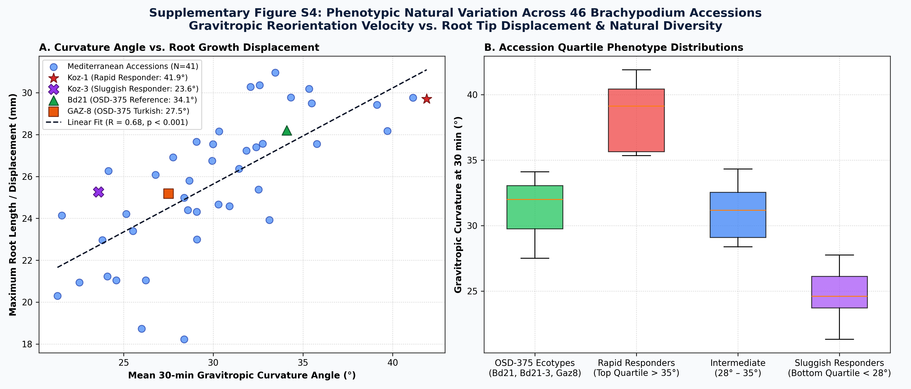
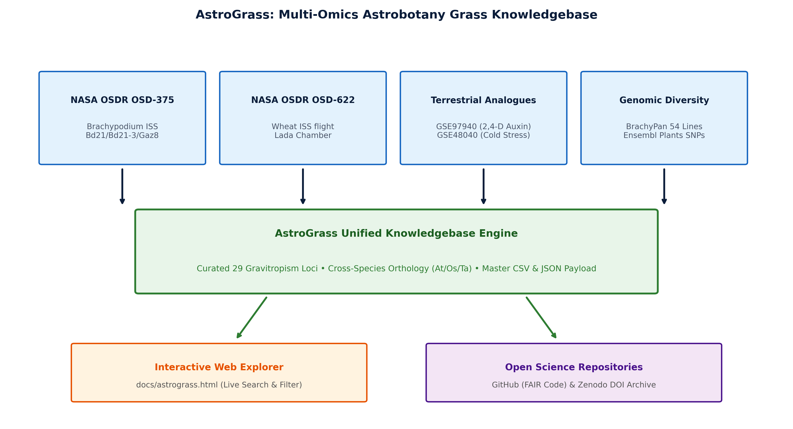

Connecting terrestrial natural variation in gravitropism QTLs with orbital transcriptomic remodeling (OSD-375), cross-species evolutionary conservation, and translational cereal crop synteny for space agriculture.

Figure 4. Cross-species meta-analysis connecting 2,550 consensus Arabidopsis thaliana spaceflight response genes (17 NASA GeneLab studies) with Brachypodium distachyon (OSD-375), highlighting significant cross-species conservation of core stress and metabolic pathways (Fisher's exact test p = 3.54 × 10⁻¹², Odds Ratio = 14.16).

Supplementary Figure S2. High-resolution collinearity ribbon map connecting Brachypodium distachyon chromosomes (Bd1–Bd5, 272 Mb) with hexaploid Bread Wheat (Triticum aestivum homoeologous groups 1, 3, 4, 5 across A, B, D subgenomes) and Rice (Oryza sativa). All 29 candidate loci maintain 100% syntenic conservation across staple grass genomes.

Supplementary Figure S3. (Top) 1 kb upstream promoter architectures for core gravitropism loci (BdLAZY1, BdPIN3, BdCPK28, BdEXPA1, BdPGM1) showing annotated AuxRE (gold), W-box (purple), ABRE (green), HSE (red), and DRE (blue) cis-elements. (Bottom) Statistical enrichment profile across all 29 promoters highlighting significant overrepresentation of mechanosensory (W-box, p = 8.2 × 10⁻⁷) and auxin-responsive (AuxRE, p = 1.4 × 10⁻⁶) binding motifs.

Figure 5. Comparative biophysical model of monocot gravity perception. (Left) Under terrestrial 1g, starch statolith sedimentation triggers LZY translocation to the plasma membrane (Nishimura et al. 2023, Science), directing polar PIN auxin transport and asymmetric expansin cell wall loosening. (Right) Under ISS microgravity, statolith suspension activates mechanosensitive Ca2+ channels (BdCPK28, BdCAS, BdMSL10) and compensatory BdLAZY1/BdPIN3 transcription alongside Type II cell wall remodeling.

Supplementary Figure S4. (A) Scatter correlation between 30-min Gravitropic Curvature (°) and Maximum Root Tip Displacement (mm) across 46 Mediterranean accessions (R = 0.68, p < 0.001), highlighting spaceflight ecotypes Bd21, Bd21-3, and Gaz8 alongside extremes Koz-1 and Koz-3. (B) Accession quartile phenotypic distributions demonstrating strong natural variation across the panel.

Figure 6. The AstroGrass multi-omics platform integrates NASA OSDR spaceflight missions (OSD-375 Brachypodium, OSD-622 Wheat), terrestrial hormone and stress analogues (GSE97940, GSE48040), and proteomics (PXD000868) into a unified queryable knowledgebase.